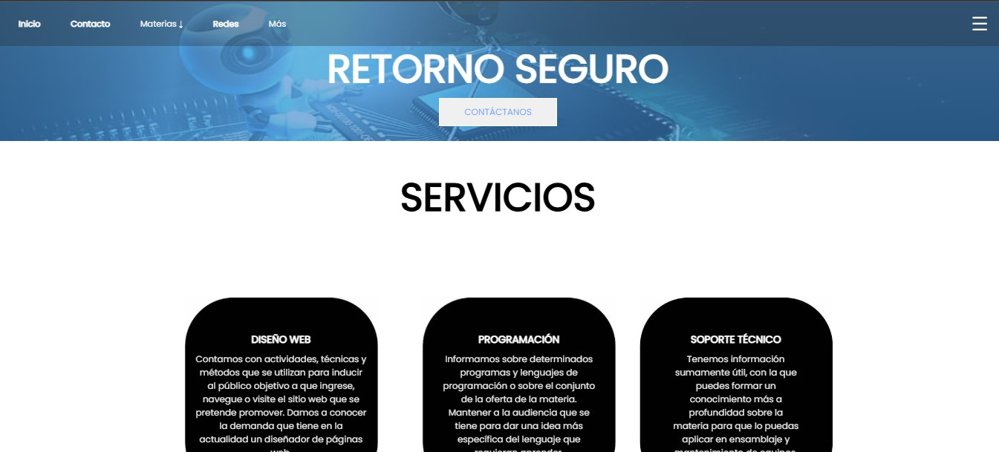
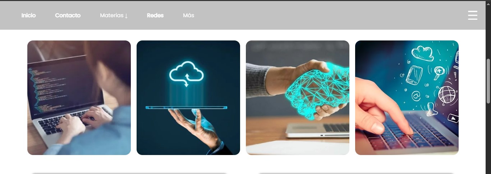
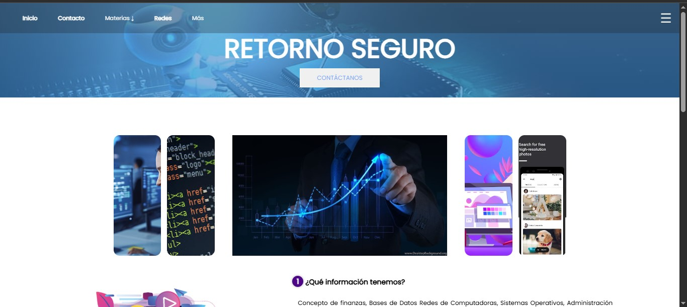
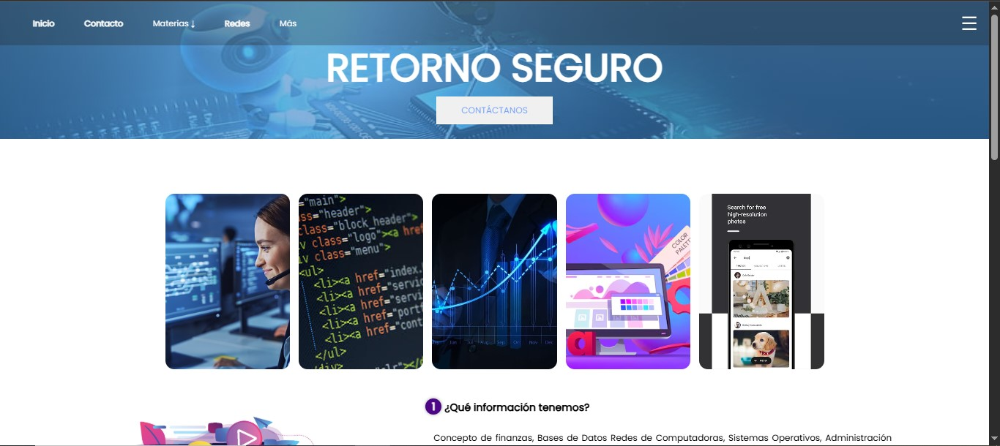
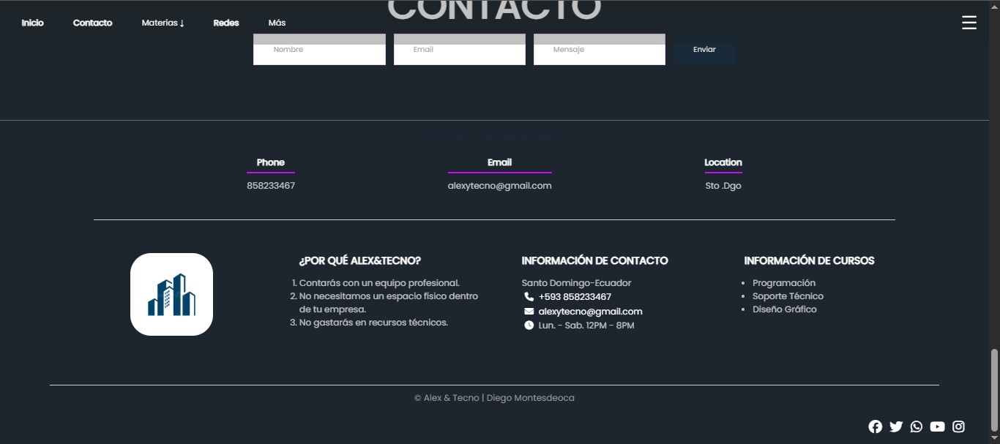

Proyectos destacados
A continuación se muestran ejemplos de trabajos y presentaciones que forman parte de mi portafolio académico.





Audio
Ejemplo de audio que acompaña al contenido multimedia del sitio.
Video
Video demostrativo integrado como parte de este portafolio.